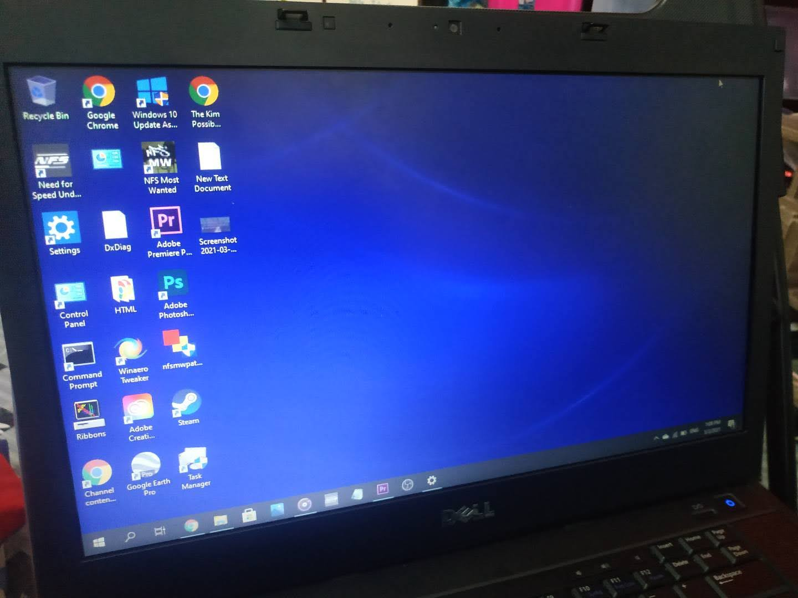
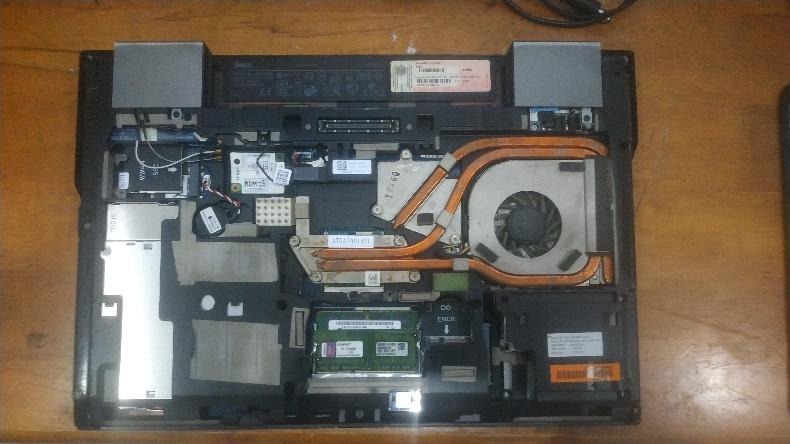
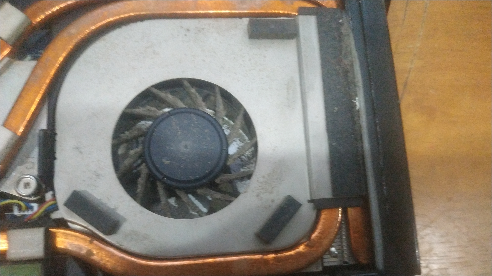
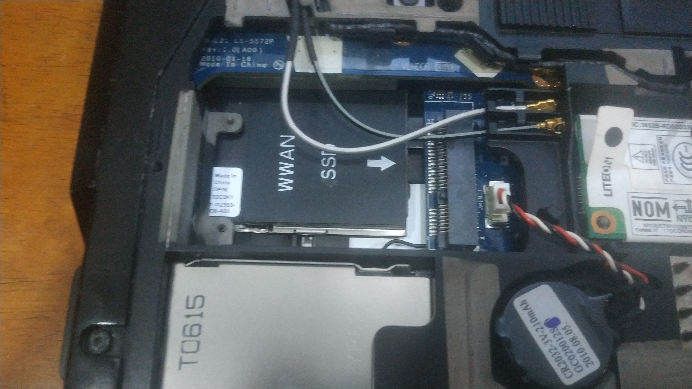
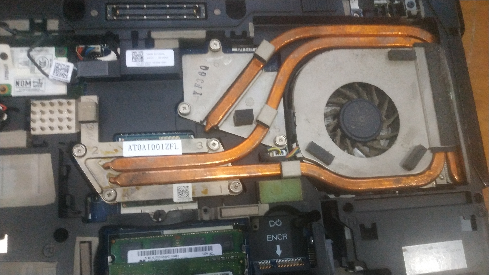

It's been a year since I last used my old laptop: A year without Dell Precision M4500.
An experience with it and what I'm using for now.
Posted on Sunday, 24 November 2023.
Hi there.
20 November 2024, It's been a year since I last used my old laptop.
Here's one picture of my laptop when it was new back in 2021.
Here it was now on 20 November 2023. It broke down and now it's unusable unless I paid $100 for the processor alone...
   What do you use for now?
Well, I can use two old laptops. But all of them are not even powerful or simply comes with problems.
The laptops that I own are a Toshiba Satellite L510 (PSLGQL-002001) and an NEC VersaPro (PC-VK17HBBCE) which these two laptops are little to none documentation on the Internet.
That's all I have for this time, and also bye!